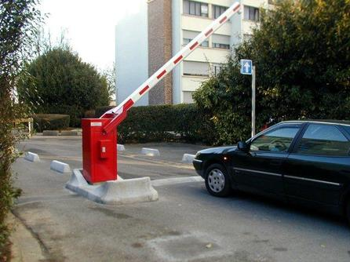

Rolling Gate - Installation, Repair and Maintenance
Rolling Gate - Installation, Repair and Maintenance
Arm Barrier Stop Gates
When an application
calls for a barrier gate, NJ Gates BG790 has the reliability and features you require for a commercial installation. The BG790 can be utilized in a high traffic area or integrated with another style gate to create a trap, preventing additional cars from entering a specified area prior to the previous car leaving.
New Jersey Gates repair , Rolling Gate repair storefront gate fin NJ gates repair install gate , gate operator , gate service , lubrication gates. roll up gate roll down gates new jersey gate 24/7 , 24 hour gate services
Rising Fence
Coins Acceptor
Gate Openers and Operators For Residential, Commercial Or Industrial Application.

When high speed
, frequent access is essential, a barrier style operator can be utilized.
Whether used
in airports, parking lots, or office buildings, barrier gates prevent vehicles from entering without proper authorization – efficiently managing entry without hampering busy traffic flow.
It can be
used as a single arm only or designed with integration to a slide or swing operator to prevent additional cars from entering a specified area prior to the previous car leaving.
Our gate
operators are available in various voltages, capacities, and technologies to afford you comfort of knowing the proper product is installed.